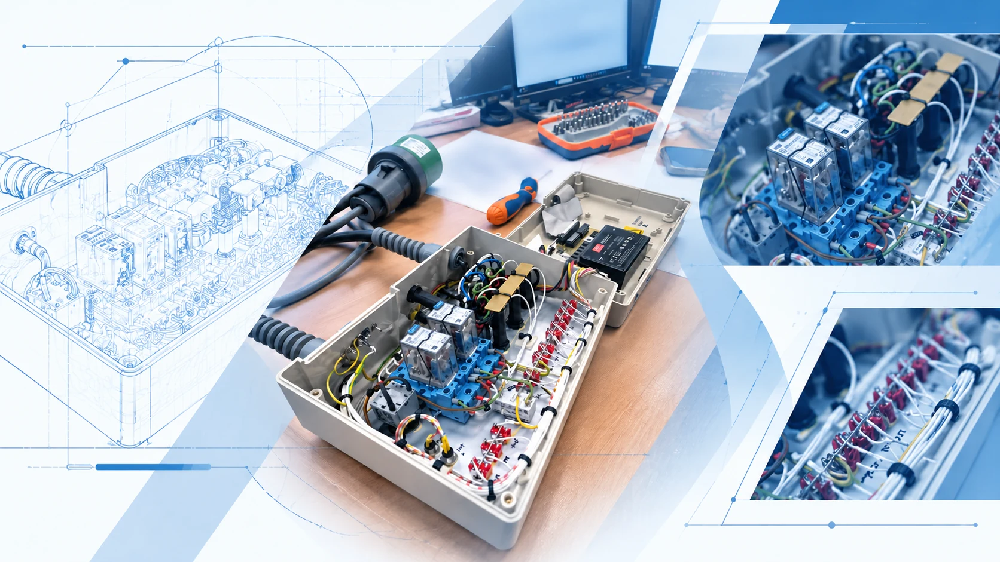
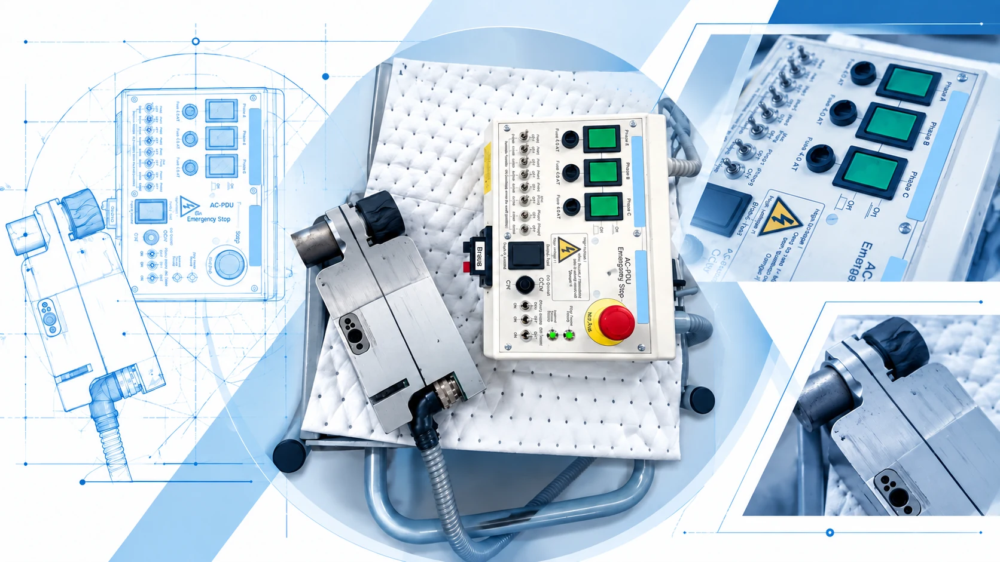
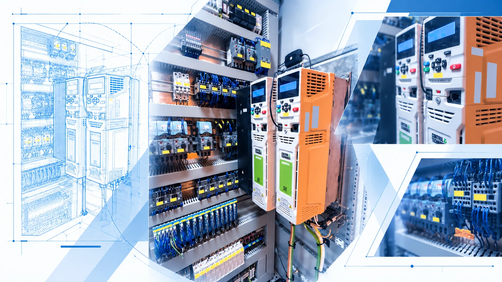
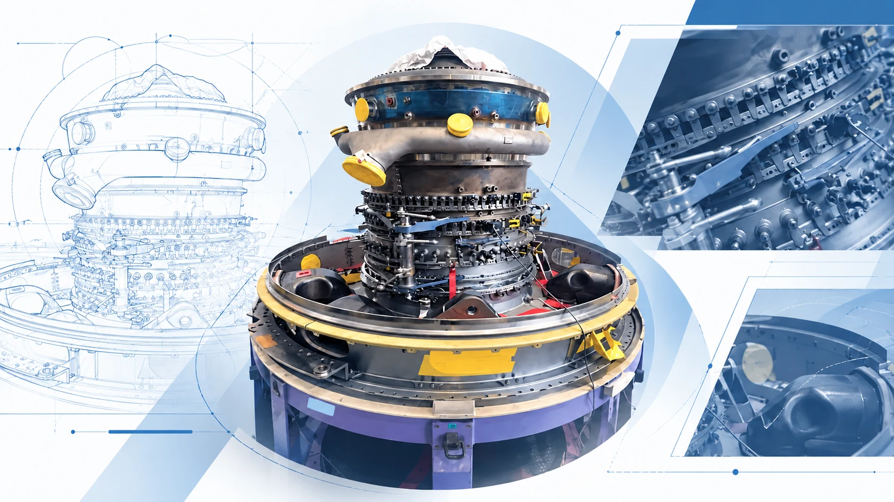

Controller-side connections
Transceiver: 3.3 V, GND, CAN TX and CAN RX. On the UNO R4, D4 and D5 were used for CAN TX and RX.
Embedded Systems Internship / Summer 2026
Development of a compact CAN-based diagnostic tool for an aircraft Power Distribution Unit.
One month in Orly, with the EL52 team and my tutor Mathéo Lopes Boto: understanding an existing system, measuring its electrical interface, developing the prototype and investigating CAN communication.
Explore the storyThe challenge
The team already had a test setup for the Power Distribution Unit, an aircraft system associated with cargo and baggage equipment. I began by studying the PDU, its connections and the existing bench.
My assignment was to develop a compact, standalone diagnostic prototype for selected checks: send CAN requests, interpret responses and present useful information through an LCD menu.
The target was a tool that a technician could use without a computer for those checks. My work combined electronic prototyping, embedded software, measurements and investigation of the receive path.
Scroll to explore the visuals and their story.

01 / System analysis & measurements
I studied the equipment and existing test setup, identified the electrical connections and examined the physical CAN interface before developing the compact prototype.
I measured approximately 114 Ω between CANH and CANL. This was an observation during the investigation, alongside checks of wiring and electrical references.
I checked the connection between the PDU case ground and the prototype GND while diagnosing communication. The system connections included terminals labelled +28 V and −28 V.
01 / A closer look
Before building the prototype, I studied the PDU, its existing test bench and electrical connections.
I measured the CAN interface and checked wiring and ground references during communication troubleshooting.
Meet the equipment
02 / My internship project
I built the prototype architecture and worked on embedded C/C++: CAN initialization, a test-frame function, response reading and interpretation, and navigation through an LCD diagnostic menu.
The test-frame function sends extended identifier 0x06000021 with DLC = 0. I worked with D4 for CAN TX, D5 for CAN RX, and the transceiver’s 3.3 V, GND, CANH and CANL connections.
I developed a diagnostic menu, with planned categories for identification, PCB status, faults, address pins, functional status and I1 / I2 / I3 information. The target was direct consultation of useful diagnostic information without a computer.
02 / The equipment behind the project
A compact CAN diagnostic prototype for an aircraft Power Distribution Unit.
I developed test-frame software and an LCD diagnostic menu around the UNO R4 Minima.
Explore the industrial setting
03 / Engineering challenge
I compared the prototype with a PCAN interface. The PDU was communicating through the reference tool, helping focus the investigation on the prototype’s receive path and interface to the bus.
Bitrate, extended identifiers, CANH/CANL, TX/RX, transceiver supply and logic compatibility, shared ground, case ground, bus termination and the behaviour of CAN.read().
The investigation combined electrical measurements, protocol analysis and embedded debugging. The cabinet image shows the industrial environment around this PDU project.
03 / Beyond the prototype
An industrial setting—and a real CAN reception challenge.
I compared the prototype with PCAN and investigated configuration, wiring, ground references and software reception.
Step into the workshop
04 / The aerospace setting
This internship brought electronics, embedded programming, digital communication and diagnostic work into an aeronautical maintenance environment.
C/C++, CAN frames, 29-bit identifiers, I²C, LCD menu design, wiring, electrical measurements and troubleshooting through comparison with PCAN.
The engine montage illustrates the environment around the PDU project. This experience strengthened my interest in embedded systems for aeronautics and space.
04 / The bigger picture
An aircraft engine assembly. A wider view of the aerospace environment surrounding my internship.
A month of electronic prototyping and CAN diagnostics in Orly connected my ENSEA studies with aeronautical maintenance.
Inside the prototypeInside the prototype / 01
A compact architecture connecting the aircraft Power Distribution Unit to an embedded controller and a technician-facing display.
Simplified educational architecture. It is not an internal equipment schematic.
Transceiver: 3.3 V, GND, CAN TX and CAN RX. On the UNO R4, D4 and D5 were used for CAN TX and RX.
Connection labels checked included +28 V, −28 V, CANH, CANL and Case Ground. Ground reference was part of the electrical investigation.
Protocol & embedded software / 02
The work combined bus configuration, extended identifiers, transmission, reception, data decoding and LCD menu management.
0x06000021CAN.read(), if received.This describes the intended request-to-display sequence. Reception of the expected PDU replies was a key focus of investigation.
One possible field layout: 8 / 24 / 8 / 16 / 8 bits. I explored this grouping to identify useful fields within the example bytes.
008 bits01 EC 9424 bits008 bits03 F116 bits008 bitsEngineering challenge / 04
The CAN reception issue called for software analysis and electrical checks across the complete communication chain.
The observation
CAN initialisation worked and TX activity was visible. Transmission appeared to work, but the UNO R4 did not correctly receive the expected replies.
The reference
A professional PCAN interface showed that the PDU was communicating. This directed the investigation towards reception and the prototype’s network interface.
The investigation
I checked CAN configuration, the physical layer, ground references and software reception, rather than treating the issue as code alone.
125 kbit/s configuration, extended identifiers, frame handling and the behaviour of CAN.read().
CANH / CANL, TX / RX, transceiver supply at 3.3 V, logic compatibility and bus termination.
Common ground and the connection between PDU Case Ground and the electronic system’s GND.
Resistance measured between CANH and CANL during the investigation. I used this observation alongside checks of wiring, termination and ground references.
The case study covers prototype development and CAN reception investigation. End-to-end operation is the intended diagnostic flow shown above.
Skills & learning / 05
A month in aeronautical maintenance brought my studies into contact with a real embedded electronics problem.
UNO R4 Minima, Renesas RA4M1, C / C++ programming, request handling and LCD menu management.
CAN 2.0B, extended 29-bit identifiers, 125 kbit/s, frame analysis and I²C display integration.
Wiring, electrical measurements, voltage and ground verification, PCAN comparison and RX troubleshooting.
Understanding equipment and maintenance needs, analysing requirements, prototyping and refining a practical diagnostic tool.
This experience strengthened my interest in the meeting point between electronics, embedded systems and aeronautics—and in applying embedded engineering to aerospace.
The project at a glance
A compact, standalone CAN diagnostic prototype for selected checks on an aircraft Power Distribution Unit.
System analysis, electrical measurements, prototype architecture, embedded test-frame software, LCD menu development and CAN receive-path investigation.
One month in Orly with EL52 and Mathéo Lopes Boto, applying electronics and embedded systems to a real aeronautical maintenance problem.
I’m looking for a four-month internship in aerospace, electronics or embedded systems from late April to late August 2027.